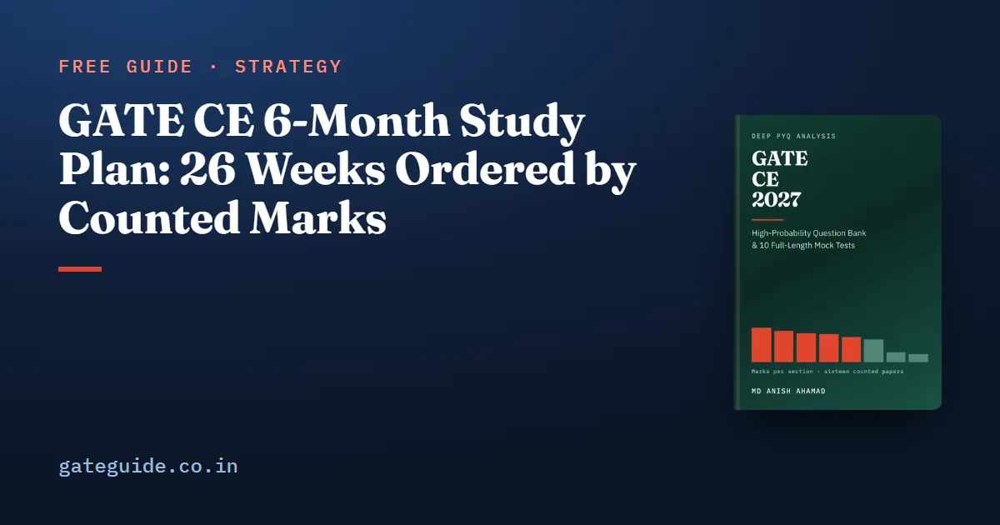

GATE CE 6-Month Study Plan: 26 Weeks Ordered by Counted Marks

A six-month GATE CE plan is 26 weeks, and six months is long enough to do three things a shorter plan has to trade against each other: learn every section in the order its marks set, give the phrases new to the 2027 syllabus a week of their own, and sit fourteen full papers with a proper diagnosis after each. This plan is built on all sixteen GATE Civil papers from 2019 to 2026, Set 1 and Set 2 in every year, counted question by question. The order comes from those counts. The calendar and every threshold are judgement, and are labelled so.
In this guide
Key takeaways
- Weeks 1 to 17 are one pass over the eight technical sections in order of counted marks, with Engineering Mathematics as a short daily track throughout.
- Week 18 is given to the phrases the 2027 syllabus names for the first time. Thirteen of them were never examined in the counted record.
- Hold back 2025 and 2026, both sets, as four unseen full papers. Work 2019 to 2024 topic by topic.
- Fourteen full papers in all: four official, ten from the book, the first at the end of week 11.
- About 13 hours a week. A 26-week run for GATE 2027 would have started in early August 2026; the compression table is at the end.
The order the marks set
The means and ranges below are per paper, across the sixteen counted papers.
| Section | Mean marks | Lowest to highest | First-pass weeks |
|---|---|---|---|
| Structural Engineering | 15.1 | 12 to 19 | 1–4 |
| Geotechnical Engineering | 13.8 | 12 to 16 | 5–8 |
| Water Resources Engineering | 12.6 | 11 to 14 | 9–11 |
| Environmental Engineering | 11.1 | 8 to 13 | 12–14 |
| Transportation Engineering | 10.0 | 6 to 12 | 15–16 |
| Geomatics Engineering | 4.4 | 1 to 7 | 17 |
| Construction Materials and Management | 3.5 | 0 to 7 | 17 |
| Engineering Mathematics | 12.9 | 10 to 15 | Daily, weeks 1–17 |
General Aptitude was exactly 15 marks in all sixteen papers. It gets a fixed hour every week from week 1, and the General Aptitude preparation guide covers its question types. The GATE CE subject-wise weightage guide prints the year-by-year figures behind this table.
Engineering Mathematics is third by mean but runs as a parallel track, because it rewards breadth: five of its six areas drew marks in all eight years, and Partial Differential Equations in six. Six areas at twenty minutes a day for seventeen weeks is easier to keep than six areas crammed into three weeks.
The 26 weeks
| Weeks | Main block, heaviest topic first | Mathematics track | Full papers |
|---|---|---|---|
| 1–4 | Structural: analysis and energy methods (86 counted marks), solid mechanics (59), steel (41), concrete (37), mechanics (18) | Calculus | None |
| 5–8 | Geotechnical: twelve topics, none above 29 marks, so breadth first | Linear Algebra | None |
| 9–11 | Water Resources: Hydraulics (61), Hydrology (58), Fluid Mechanics (52), Irrigation (31) | Numerical Methods | 2025 Set 1, end of week 11 |
| 12–14 | Environmental: water and waste water quality and treatment (123), air pollution (32), solid wastes (22) | Ordinary Differential Equations | None |
| 15–16 | Transportation: traffic (62), infrastructure (56), pavements (42), and Transportation Planning read in full | Probability and Statistics, including pmf, pdf and cdf | 2025 Set 2, end of week 16 |
| 17 | Geomatics and Construction, syllabus first | Partial Differential Equations | None |
| 18 | Every phrase new to the 2027 syllabus, all sections | Mixed revision | None |
| 19–23 | Second pass in the same order, driven by the error log | Error log | About seven |
| 24–26 | Papers and diagnosis; no new topics in the last fortnight | None | About five, the last early in week 26 |
The papers in weeks 19 to 26 are the book's ten mocks and the two 2026 papers, each followed by an evening of diagnosis. Classify every lost mark as a misread, a wrong formula, an arithmetic slip or not known; only the last needs more reading.
Why the recent papers stay unseen
Multiple-select questions grew from none in both 2019 papers and both 2020 papers to 11 and 15 in the two 2025 papers, and 6 and 4 in 2026. The four most recent papers are the nearest thing you have to the current format. Solve them topic by topic in week 3 and you have spent them. Keep them for the only job they alone can do: telling you, cold, how you handle a real paper.
Milestones, answered yes or no
The thresholds are judgement. Pace everything at 1.8 minutes per mark, which is the paper's own rate.
- End of week 4. The Structural questions from both sets of 2023 and 2024, 63 marks in all, timed, with any prestressed concrete question struck out. Half or more → yes. If not, week 5 repairs Structural before Geotechnical starts.
- End of week 11. GATE 2025 Set 1, unseen, three hours. Score it section by section, never as a single total. Structural, Geotechnical and Water Resources each at half or more of their marks in that paper → yes.
- End of week 16. GATE 2025 Set 2, unseen. Every large section has had its first pass. 50 or more, with no large section below 40 per cent → yes. The 50-mark arithmetic for GATE CE shows how section shares build that figure.
- End of week 18. From memory, on one sheet: the four steps of travel demand modelling in order, and a line on each of the thirteen never-examined phrases. All of them → yes.
- End of week 23. Two papers in a row with zero blank numerical-answer and multiple-select questions, since neither carries negative marking.
- Week 26. One last paper early in the week, then the formula sheet and the error log only.
Week 18: the phrases no past paper will bring you to
The 2027 syllabus names thirty topics for the first time: twenty-nine new phrases, plus streamflow measurements, a word inserted into an otherwise unchanged line. Being newly named is not the same as never examined: eleven of the thirty had already been asked, fully or in part, under older wording, such as streamflow measurements (2023 Set 2, Q.63) and level of service (2020 Set 1, Q.55). Those you will meet in past papers anyway.
Thirteen were never examined in the counted record: isolated footings; ground improvement techniques; flow past sharp crested weirs; basics of landfill design and operation; classification of roadways and design vehicle; interchanges; four-step travel demand modelling; GNSS surveying; cadastral surveying; cartography and map projections; digital photogrammetry; space resection, parallax equations and camera calibration; and long wall, short wall and centre line quantity estimation. No amount of past-paper practice reaches them, which is why they get a week of their own. Transportation Planning drew zero marks in all 1,040 counted questions because it was not on the syllabus. There is no pattern to learn, only the syllabus line and a standard text.
The other direction matters as much. Twenty-five counted marks now sit outside the syllabus: prestressed concrete 14, free vibration of an undamped single-degree-of-freedom system 8, dynamic pile formulae 2, remote sensing and GIS 1. When they come up in 2019 to 2024 papers, strike them out.
Two cautions about the order
Steel is not the section to survive on. GATE 2027 is organised by IIT Madras, which also set both 2019 papers. Across those two papers Concrete Structures drew 1 mark and Steel Structures 10, and 2019 Set 2 had no Concrete question at all. Two papers are a signal, not a law, but they argue for learning steel to the same standard as concrete in weeks 1 to 4. More on the institute is in what IIT Madras setting GATE 2027 means.
A low count is not permission to skip. Construction Materials and Management has run from 0 to 7 marks, and effective stress showed in two counted years under the book's first filing rules and in six once they were corrected, with no question changing. Week 17 exists so the small sections get one careful pass rather than none.
Starting late: compressing 26 weeks into 18
From the end of September 2026 to 6 February 2027 is about eighteen weeks. Cut eight, in this order.
| Change | Weeks saved | What it costs |
|---|---|---|
| Structural and Geotechnical in three weeks each | 2 | Their lightest topics are read once, not practised |
| Water Resources and Environmental in two weeks each | 2 | The same, below their heaviest topics |
| Second pass cut from five weeks to two | 3 | Revision follows the error log only |
| Final phase cut to two weeks | 1 | Fewer papers; keep every diagnosis evening |
Never cut week 18, the unseen papers or General Aptitude. With fewer than eighteen weeks, this is the wrong shape; the last two months strategy for GATE CE is built for a shorter run.
The GATE CE 2027 book prints the full topic tables behind this order, a hundred-question priority list, and 924 questions with worked solutions, 650 of them in the ten full-length mocks this plan uses from week 19. Dates can change, so check the current notification on the official GATE 2027 website. GATE Guide is independent and is not affiliated with IIT Madras, IISc or GATE.
Frequently asked questions
Is 6 months enough to prepare for GATE Civil Engineering?
For most candidates it is enough for one full pass of all eight technical sections in the order of their counted marks, a dedicated week for the phrases new to the 2027 syllabus, a second pass, and fourteen full papers with an evening of diagnosis after each. No plan can promise a score; judge this one by whether you meet its milestones.
How many hours a day should I study in a 6-month GATE CE plan?
This plan assumes about 13 hours a week, or two hours on weekday evenings plus a longer weekend session, which comes to roughly 340 hours over 26 weeks. That figure is judgement, not a measured requirement. If you have more time, put it into the second pass and the diagnosis of full papers rather than into more reading.
Which subject should I start first for GATE CE?
Structural Engineering, the heaviest section at a mean of 15.1 marks across the sixteen counted papers, with Engineering Mathematics running alongside it as a short daily track. Inside Structural, begin with Structural Analysis and energy methods, which carried 86 counted marks, more than the whole of Geomatics. If Structural is already your strongest section, start with your weakest of the top four instead.
Which past GATE CE papers should I keep for mock practice?
Hold back the four most recent papers, 2025 Set 1 and Set 2 and 2026 Set 1 and Set 2, and sit them only as unseen full papers. They are the closest to the current pattern, including the multiple-select questions that grew from none in 2019 to 11 and 15 in the two 2025 papers. Use 2019 to 2024 topic by topic during the first pass.
Can I start a 6-month GATE CE plan now for GATE 2027?
Only in compressed form. GATE 2027 starts on 6 February 2027, about eighteen weeks from the end of September 2026, so a full 26-week run would have needed to begin in early August. The compression table in this guide cuts eight weeks and names what each cut costs. Confirm your session's date on the official website.
Sources
- GATE 2027 official website (IIT Madras)
- GATE 2027 CE syllabus (IIT Madras, official PDF)
- GATE past papers and answer keys archive (IIT Guwahati)
Dates, fees and the syllabus are set by the GATE 2027 organising institute and can change. Always confirm at gate2027.iitm.ac.in.